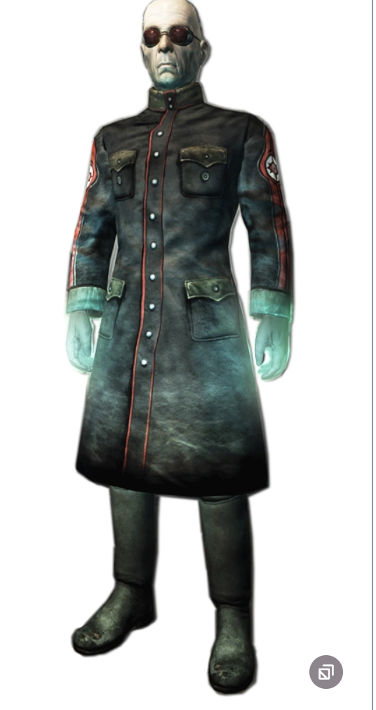
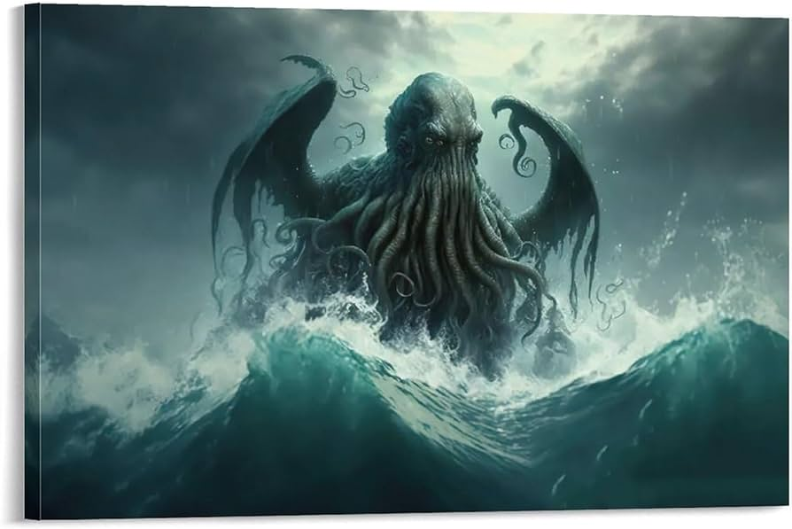
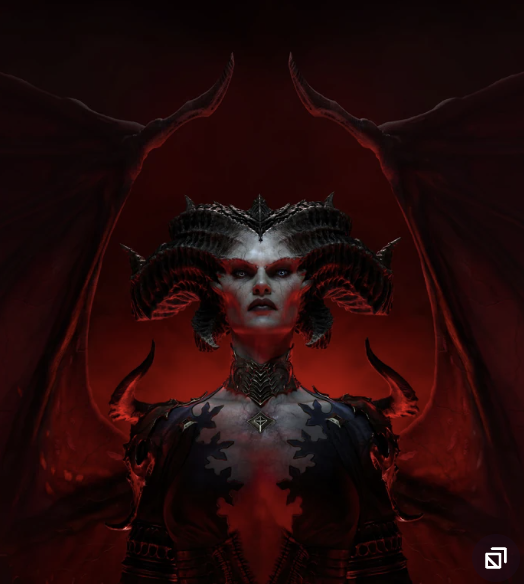

Scribes
"Acerrimus ex omnibus nostris sensibus est sensus videndi.
Magna res est vocis et silenti temperamentum. Respice post te, mortalem te esse memento."
("The keenest of all our senses is the sense of sight.
The great thing is to know when to speak and when to keep quiet.
Look behind you, remember that you are mortal")
- Wolfenstein
- Scribes
- Gaming
for More Information Click Here.

The Call Of Cthulhu
“The most merciful thing in the world, I think, is the inability of the human mind to correlate all its contents.
We live on a placid island of ignorance in the midst of black seas of infinity, and it was not meant that we should voyage far.
The sciences, each straining in its own direction, have hitherto harmed us little;
but some day the piecing together of dissociated knowledge will open up such terrifying vistas of reality,
and of our frightful position therein,
that we shall either go mad from the revelation or flee from the deadly light into the peace and safety of a new dark age.”
- H.P. Lovecraft
- Call Of Cthulhu
- Dark Sciences
For More Information Click Here.

Mother Of The Hatred
"By three they come. By three, thy way opens.
By the blood of the willing, we call thee home. Hail, Daughter of Hatred. Creator of Sanctuary.
Hail...Lilith"
- Diablo
- Lilith
- Daughter Of Mephisto
For More Information Click Here.
